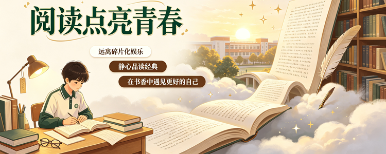

阅读，是拓宽眼界、滋养心灵最好的方式。步入八年级，我们的知识储备不断丰富，认知视野也在不断拓展，经典书籍不再是枯燥的文字堆砌，而是陪伴我们成长、启迪我们思想的良师益友。一本好书，可以带我们领略山河万里，感悟人生百态，收获成长力量。为了让更多同学爱上经典、读懂经典、乐于阅读，我们打造了这款专属中学生的经典阅读主题网站，为大家搭建一个优质的阅读学习与交流平台。 网站聚焦中小学生经典阅读，精选各类适配青少年的优质读物，涵盖国学经典、中外名著、散文诗集、励志读物、科普经典等多个类别。每一本书籍都配有通俗易懂的内容介绍、创作背景、核心主旨和阅读感悟指引，帮助同学们快速了解书籍精髓，攻克名著阅读难点，轻松应对课内课外的阅读学习需求。无论你是喜欢跌宕起伏的文学名著，还是治愈温柔的散文随笔，都能在这里找到适合自己的读物。让我们远离碎片化娱乐，静下心来品读经典，在文字中积累知识、沉淀自我，培养良好的阅读习惯，让阅读成为青春最美好的底色，在书香陪伴中慢慢成长、遇见更好的自己。